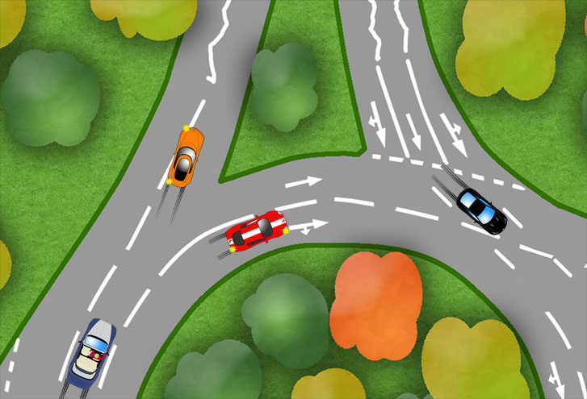

If it’s not safe to do that, then change your signal and proceed carefully around the roundabout again. Be prepared to slow down if the black car has emerged.

This is a tricky
situation which could
have been avoided
with well timed
mirrors, signals and
lane selection.